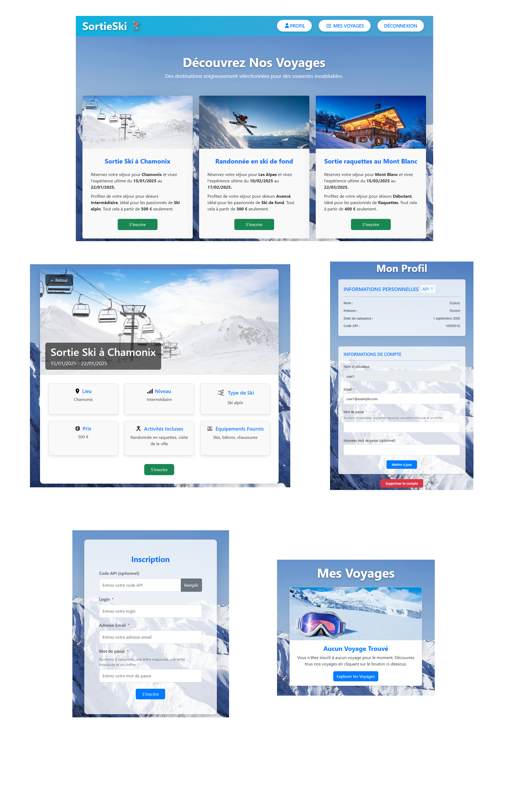

SortieSki - Gestion de Voyages (Projet de BUT3)
- Compétences déployées : Symfony, API REST, MySQL, Docker, JWT (LexikJWTAuthenticationBundle), Voters & Permissions, Méthodologie Agile (Scrum).
Développement d'une application API REST en Symfony pour la gestion de voyages de ski (création, inscription, annulation, rôles, etc.). L’API est intégrée avec un frontend Vue.js pour offrir une interface utilisateur conviviale. De plus, une partie “annuaire” (Les Jaunes Pages) est en lien avec cette application pour gérer et authentifier les participants.
Fonctionnalités principales :
- Gestion des voyages : création, modification, suppression, définition du lieu, date, prix et activités incluses.
- Inscription / désinscription : un utilisateur authentifié peut rejoindre ou quitter un voyage.
- Rôles et permissions :
ROLE_USER: participation aux voyages.ROLE_ORGA: création, édition et suppression de voyages organisés.ROLE_ADMIN: suppression des utilisateurs et voyages, gestion avancée.
- Liste publique ou privée des participants : chaque organisateur peut rendre publique ou non la liste de ses voyageurs.
- Authentification via JWT : l’API est sécurisée et génère un token pour accéder aux endpoints protégés.
L’application communique par JSON et supporte le CRUD complet sur les entités “Voyage” et “Utilisateur”. Le tout est conteneurisé via Docker pour faciliter le déploiement.
Quelques détails techniques :
- Base de données MySQL, migrations et fixtures (jeu de données factices).
- JWT implémenté via
LexikJWTAuthenticationBundle. - Gestion fine des droits avec des Voters et des annotations (par exemple, un organisateur ne peut éditer que ses propres voyages).
- Intégration avec le projet d’annuaire “Les Jaunes Pages” : un champ
codepermet de faire le lien avec l’API de l’annuaire, assurant ainsi une cohérence utilisateur. - Front Vue.js (dans un autre dépôt) pour l’interface web publique : la partie Vue.js appelle les endpoints de l’API et affiche dynamiquement les voyages et inscriptions.
Réalisé en groupe de quatre, ce projet vise à perfectionner nos compétences en Symfony orienté API REST, la gestion d’utilisateurs avec plusieurs rôles et la conteneurisation Docker.
